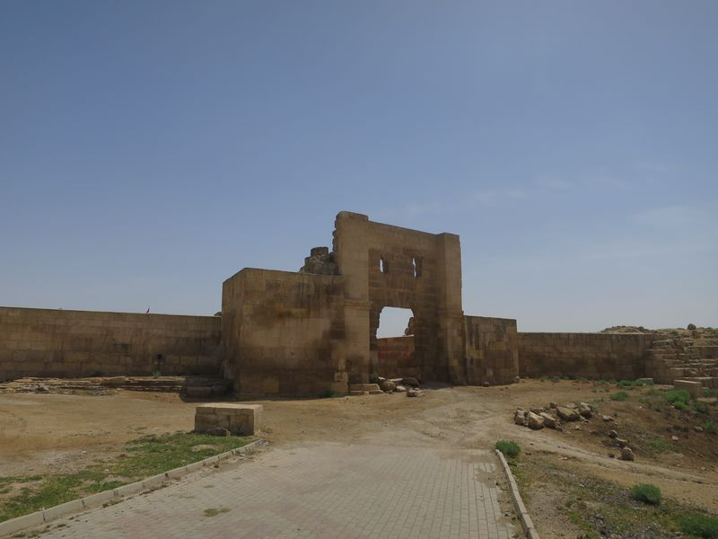
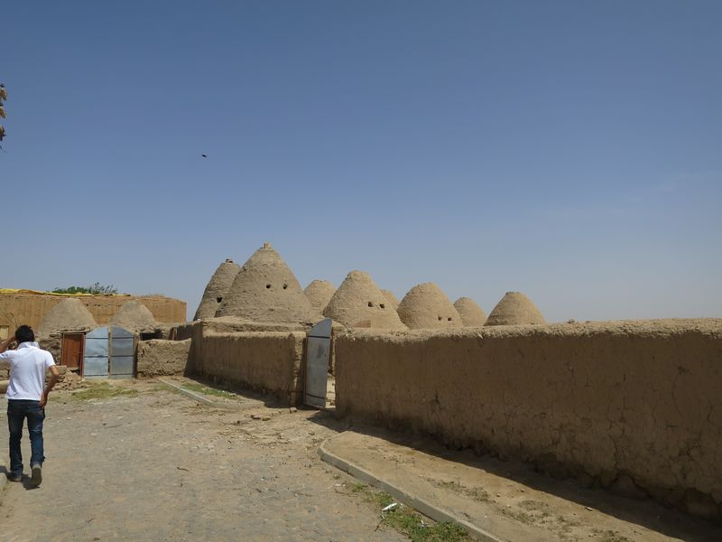

今朝去了另一間餐廳吃，只叫了乳酪蜜糖和麵包，10 TL，但真的不夠昨天的店好吃。約了去 Göbekli Tepe 的 tour 八時半，昨晚 Mustafa 說這個會由他的朋友跟我去，他的朋友，不懂英文，我心想，那麼，這還是個 tour 嗎……
Göbekli Tepe 其實唔遠，但好可惜沒有公共交通可以到。司機車我到主入口，然後，我要自己買票入去，而司機就在外面等。門票 5 TL，由正門搭免費小巴去到古蹟，每半小時一班。
Göbekli Tepe 是好熱門好出名的，2011 年本 National Geographic 的封面故事就係佢，內文說遊客一車車的來看。此刻，得我一個外地遊客加兩個本地遊客。在舖得好好的木板路上行，圍繞一個圈就行完，重要的東西外有文字描寫。這是現時世上已知的 temple 中，最早的 temple，11600 年前，好不可思議，還証明了 temple 早於城市的出現。
看文字描寫和實物，在場工作人員繼續進行考古，就完，回去，司機載我去到 octogar，然後就離開。就這樣子就 100 TL，這是 tour 嗎？tour 不是包入場費和導遊的嗎？那麼我走去包架的士唔好？還要不用 100 TL。
然後在 octogar 搭小巴去 Harran，6 TL，一小時左右車程。小巴去到 Harran 市，一落車就見到古蹟，不過不知道主要入口在何方。在一個疑似城牆入口的地方，一個男子騎著電單車出來，問我要不要導遊。
Mustafa 昨晚千叮萬囑，去到 Harran，不要理任何人，付錢，入場，行，睇，影相，走人。
就這樣是嗎？和今早一樣，去，打個白鴿轉，影，睇，走。我講到明想要 tour，就是想有人講解，問他有否來 Harran 的 tour 他就叫我自己來睇算。所以，我請了這個導遊。
不是的話，好多東西我不知道，例如那些 beehive house，哪些是原本的古蹟，哪些是之後建出來為了遊客的，某個地方原本是城門，蒙古人來破壞了一切等等。城中有一間 evi (house)，是仍有人住，裏面變了個小博物館似的。
「平時，每天差不多五十部旅遊巴來這裏，今天，只有一個遊客。」導遊說。我見到一部旅巴，說有一部呀，他說，那是工作人員的。
Harran 除了本身建築歷史價值，還在聖經創世記中提到，是先知 Abraham 的爸爸 Terah 及其後人曾經居住的地方，Abraham 往迦南之地由 urfa 經這裏，留到七十幾歳才繼續南下。
然後這個導遊問我有否興趣坐他的電單車去附近的幾個古蹟，Bazda Caves、Han el Ba’rur、Suayb 和 Sogmatar。問過價之後，心想雖然應該是貴的，但比起今早那 100 TL 就變得好值得，連價都沒有講，就答應了。因為這個人的解說很好。
這幾個地方分怖在 Harran 東面很遠，四十多公里，然後再四十多公里行北面的路直接回去 Urfa，都是坐在電單車上，其實真係坐到好累的，不過沿路的風景好，差不多都是田，看見很多新的大的引水道，是 Atatürk Dam 工程帶來的延伸，還有大引水道通往 Sryia。
Bazda Caves 是因挖掘石頭去建 Harran 城而成的，外面好熱，裏面好涼。Han el Ba’rur 是商旅的住宿地，今天倒閉得好緊要，裏面很多地方還變了村民養雞的地方…
Shuayb Shehri 是先知 Shuayb 的居住地，導遊還說 Moses 也曾到這裏，和 Shuayb 女兒結婚，Shuayb 有指是聖經中的 Jethro。
Sogmatar 我最喜歡，周圍的地質和地貌都好不同，感覺好特別，這裏一帶廣闊的山頭，是古時的太陽神、月神等等星球的神廟，還有獅子等動物的神廟。石上有阿述文刻字。
然後就是坐很久電單車但風景好靚的路程回去 Urfa，還有時間上一上昨天關了門的城堡。晚餐後回酒店，Mustafa 好似心情唔錯咁，點知傾傾下他問我今天如何有沒有人騷擾我問我要錢，是不是去完就走。
我告訴了他我跟了一個導遊之後還去了那四個地方。他就怪責我為什麼我不一早和他說，他也有 tour 去啊。
喂阿哥，又係我問過你有冇去 Göbekli Tepe 同 Harran 嘅 tour 你話我得一個人 Göbekli Tepe 就 100 TL Harran 就又加百幾 TL 不如 Harran 可以自己去，又係你問多問就「please see the guest book」。
我都冇怪你個死人 Göbekli Tepe Tour 其實係只安排交通都唔係 tour 嚟。起碼我今日跟嗰個，真係得到我想要嘅嘢。仲有，啲錢一定要你賺晒嘅，人哋而家一個客都冇。

Göbekli Tepe
Harrán
beehive houses (以前嘅)
beehive houses (為咗旅遊業起出嚟嘅)
Bazda Caves
Shuayb Shehri
Moon and Sun God
Sogmatar
Mixed Kebab
2016 Turkey ❮ Previous Next ❯